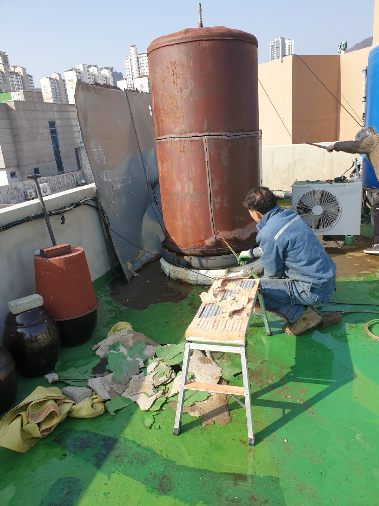

옥상 심야보일러, 분할 철거부터 반출·정리까지
사용하지 않는 옥상 심야보일러를 철거한 현장입니다. 보온재를 제거한 뒤 무거운 보일러 본체를 운반 가능한 크기로 나누어 해체했습니다. 이후 사다리차를 이용해 철거 부재와 폐기물을 내려보내고, 현장 청소로 작업을 마무리했습니다.

작업 흐름
보온재 제거 → 본체 분할 해체 → 사다리차 반출 → 현장 정리
보온재 제거 → 본체 분할 해체 → 사다리차 반출 → 현장 정리
상가·내부 철거부터 원상복구, 보일러·구조물 철거와 폐기물 정리까지. 현장 조건에 맞는 작업 범위와 견적을 상담합니다.
📍 부산 · 양산 · 김해 · 경남 어디든 신속 출장
사직동 본점을 거점으로 부산·양산·김해 및 경남 전 지역 현장을 직접 방문합니다.

공간과 구조물, 현장 조건에 맞춰 작업 가능 여부와 범위를 안내합니다.
식당, 카페, 사무실, 학원 등 상가와 실내 공간의 가벽·천장·바닥 철거 작업을 상담합니다.
계약 만료 및 퇴거·이전 시 건물 관리 기준에 맞춘 깔끔한 철거와 원상복구를 진행합니다.
심야보일러, 옥상 구조물, 학교·운동장 시설물 등 노후 설비와 구조물의 안전한 해체·철거를 상담합니다.
현장의 구조와 차량 진입 조건을 확인한 뒤 지하주차장 구조물 및 바닥 파쇄·철거 범위를 상담합니다.
철거 잔재물, 인테리어·건설 폐기물, 사업장 대량 폐기물, 가정집 생활폐기물 및 유품정리 반출을 상담합니다.
작은 구조물부터 대형 현장까지, 부산·양산·김해 및 경남 어디든 현장 사진과 위치를 알려주시면 신속히 안내해 드립니다.
대봉개발이 직접 시공한 현장 이야기입니다.
사용하지 않는 옥상 심야보일러를 철거한 현장입니다. 보온재를 제거한 뒤 무거운 보일러 본체를 운반 가능한 크기로 나누어 해체했습니다. 이후 사다리차를 이용해 철거 부재와 폐기물을 내려보내고, 현장 청소로 작업을 마무리했습니다.
부곡동 동현중학교 운동장의 축구골대 2개를 철거한 사례입니다. 그물망을 제거하고 매립된 하부를 굴착한 뒤 골대를 운반 가능한 크기로 절단했습니다. 한쪽 골대에서 확인된 콘크리트 고정부는 추가 장비로 파쇄했으며, 절단 부위를 정리하고 굴착 부위를 흙으로 되메워 마무리했습니다.
사진은 실제 작업 과정의 일부입니다. 반출·청소·되메우기 과정은 제공된 현장 설명을 바탕으로 정리했으며, 위 사진을 최종 완료 사진으로 표시하지 않았습니다.
부산 · 양산 · 김해 및 경남 전 지역의 현장 여건에 맞춘 대봉개발의 세부 작업 안내 및 최신 소식입니다.
📌 해운대 우동·재송동 사무실·점포 원상복구 철거, 예상 비용과 작업 가능 여부가 궁금하신가요?
번거롭게 긴 설명을 적으실 필요 없이 【동네 + 층수(엘리베이터 유무) + 희망 날짜 + 현장 사진 2~3장】을 010-8535-9787 로 문자 보내주세요.
확인 후 예상 견적과 가능한 일정을 안내해 드립니다. 사진에서 확인되지 않은 작업이나 조건 변경이 있으면, 작업 전에 먼저 설명드리고 동의를 구한 뒤 진행합니다.
■ 부산 해운대구 우동·재송동·좌동 사무실·점포 원상복구 철거, 어떤 점을 먼저 살펴봐야 할까요?
계약 만료를 앞두고 임대인이나 관리사무소와 협의된 기준에 맞춰 내부 칸막이를 해체하고 남은 사무 집기를 비워야 하는 상황에서는 무작정 작업을 시작하기보다 작업 범위와 반출 조건을 정확히 짚어보는 것이 중요합니다.
주로 다루는 대상은 유리 칸막이, 석고보드 가벽, 상담 데스크, 바닥 데코타일, 사무용 책상·회전의자·파티션·철제 캐비닛 등이며, 현장 여건에 따라 가장 효율적인 인력과 차량 배치가 달라집니다.
■ 대봉개발의 직영 작업 절차
전기·통신선을 먼저 안전하게 정리한 뒤 가벽과 바닥재를 순서대로 해체하고, 발생한 인테리어 잔재물과 폐가구를 차량으로 함께 반출합니다.
30년 현장 경험을 가진 작업자들이 직접 현장을 살피고 해체부터 폐기물 상차, 기본적인 바닥 정리까지 차분하고 꼼꼼하게 마무리합니다.
■ 사진 문자 상담 시 함께 알려주시면 좋은 내용
✔ 확인 사항 : 철거할 가벽의 대략적인 길이, 바닥 데코타일 제거 포함 여부, 반출할 사무 집기 물량과 엘리베이터 사용 조건
단품 수거부터 전체 정리까지 부산 · 양산 · 김해 및 경남 지역 어디든 상담 가능하니 편하게 연락 주세요.
네, 건물 관리 규정에 맞춘 엘리베이터 보양과 작업 가능 시간대(주말·야간 등)를 사전에 확인하여 일정을 맞춰드립니다.
안녕하십니까, 사직동 본점을 중심으로 현장에서 직접 뛰는 대봉개발입니다. 😊
김해 진영읍 일대에서 식당 폐업 주방·내부 철거 업체를 알아보고 계신다면 【동네 + 층수 + 현장 사진】을 010-8535-9787 로 편하게 문자 남겨주세요.
반출 조건을 확인한 뒤 작업 방법과 예상 견적을 친절히 안내해 드립니다.
■ 【김해시 진영읍】 실제 현장 작업 기록 (2026.10.28)
👉 작업 메모 : "김해시 진영읍 미야카세 포차 철거"
현장 여건에 맞춰 반출 동선과 안전 조치를 확인한 뒤 작업을 진행한 기록입니다.
(※ 아래 안내는 동일 유형의 작업을 알아보시는 분들을 위한 공통 참고 기준입니다.)
■ 시작부터 마무리 바닥 정리까지 꼼꼼하게
가스·수도·전기 마감 상태를 먼저 확인한 후 무거운 스텐 주방 설비를 빼내고, 계약 조건에 따라 홀 가벽 해체나 주방 바닥 정리를 진행합니다.
작업 중 혹시라도 사진으로 보이지 않던 추가 작업이 필요한 경우에는 임의로 진행하지 않고, 반드시 사전에 설명드리고 협의를 거친 뒤 진행합니다.
■ 빠르고 정확한 상담을 위한 체크포인트
✔ 체크 포인트 : 주방 집기만 수거할지 또는 홀 가벽·천장 닥트·바닥 방수턱 파쇄(하스리)까지 포함된 원상복구인지 여부
부산 · 양산 · 김해 및 경남 지역 일대 어디든 현장 여건에 맞춰 성실하게 상담해 드리겠습니다.
네, 가능합니다. 철거 공정 없이 주방 설비와 집기류, 마대 폐기물만 일괄 수거하는 작업도 별도로 진행합니다.
📞 부산진구 서면·양정동 공장·창고·주차장 철거 및 폐기물, 처음 문의하셔서 어떤 것부터 확인해야 할지 막막하신가요?
통화가 어려우셔도 괜찮습니다. 【동네 + 층수 + 엘리베이터 여부 + 사진 2~3장】을 010-8535-9787 로 문자로 보내주시면 확인 후 예상 견적과 일정을 안내해 드립니다.
■ Q1. 어떤 물건과 작업까지 한 번에 맡길 수 있나요?
A. 공장·창고 퇴거를 위해 가설 판넬 구조물과 묵은 자재를 정리하거나, 층고가 낮은 지하주차장 내 구조물·폐기물을 반출해야 하는 상황에서 필요한 공장·창고 내 조립식 샌드위치판넬 가벽·가설건축물, 적재 랙·선반, 지하주차장 구조물, 콘크리트 방수턱·바닥 파쇄, 산업·사업장 폐기물 해체 및 수거를 함께 다루고 있습니다.
현장 조건에 따라 단품 수거부터 전체 원상복구 및 폐기물 반출까지 필요한 범위만 선택해 맡기실 수 있습니다.
■ Q2. 작업은 어떤 순서로 진행되며 추가 비용 걱정은 없나요?
A. 현장 층고와 출입구 폭에 맞는 차량·장비를 투입해 판넬과 철골 구조물을 안전하게 해체하고, 폐목재·고철·혼합 폐기물을 분리 상차합니다.
보내주신 사진과 조건을 바탕으로 예상 견적을 먼저 안내해 드리며, 현장에서 사진에 없던 추가 작업이 필요한 경우에는 반드시 작업 전에 먼저 설명하고 동의를 구합니다.
■ Q3. 견적 문의할 때 무엇을 알려주면 되나요?
A. 【철거할 구조물 면적/높이, 지하주차장 층고 제한 여부, 반출할 사업장 폐기물 종류와 사진】를 사진과 함께 문자로 남겨주시면 가장 정확합니다.
부산 · 양산 · 김해 및 경남 지역 전 지역 상담 가능하니 언제든 편하게 연락 주세요.
네, 지하주차장 진입이 가능한 저상·소형 작업 차량을 투입하여 높이 제한 구역에서도 원활하게 반출합니다.
❓ "엘리베이터가 없는 층인데 가능할까요?", "문이 좁아 안 빠지는데 어떻게 내리죠?"
금정구 부곡·장전동에서 반출 조건이 까다로운 축구골대·조형물·철구조물 철거 때문에 고민 중이시라면 【동네 + 층수/계단 여부 + 현장 사진】을 010-8535-9787 로 보내주세요.
현장 출입문 폭과 이동 동선을 확인해 가장 알맞은 해체·반출 방법과 예상 비용을 안내해 드립니다.
■ 까다로운 반출 여건에서 확인해야 할 점
부식되거나 흔들려 위험한 운동장 골대, 야외 조형물, 철구조물을 절단 해체하고 바닥 고정부까지 안전하게 제거해야 하는 상황 중에서도 계단 작업이나 골목길, 지하·옥상 현장은 일반 작업보다 안전과 보양에 훨씬 더 신경을 써야 합니다.
학교·체육시설 노후 축구골대·농구골대, 야외 조형물·안내판, 철제 캐노피·펜스, 땅속 콘크리트 고정 기초부 등을 무리하게 옮기려다 문틀이나 벽면이 상하지 않도록 사전 분해·절단 계획이 필요합니다.
■ 현장 여건에 맞춘 분해·해체 및 반출
불꽃·파편 방지 안전 조치를 한 뒤 철구조물을 절단 해체하고, 바닥이나 땅속에 콘크리트로 고정된 기초부는 파쇄(하스리) 후 평탄하게 마감합니다.
계단 인력 반출, 사다리차 이용, 소형 차량 진입 등 현장 구조에 맞는 방식을 선택하며, 조건 변경이 필요한 경우 작업 전 미리 안내하고 동의받습니다.
■ 반출 조건 확인을 위해 알려주실 내용
✔ 확인 포인트 : 구조물 사진과 대략적인 크기, 바닥 콘크리트 기초 파쇄 포함 여부, 작업 차량 진입 가능 여부
혼자 옮기기 위험한 무거운 짐이나 구조물이 있다면 부산 · 양산 · 김해 및 경남 지역 대봉개발로 편하게 문의해 주세요.
네, 지상 구조물 절단뿐만 아니라 기초 콘크리트 굴착·파쇄 및 되메우기 평탄화 작업까지 요청 범위대로 진행합니다.
📅 정해진 퇴거일이나 계약 만료일에 맞춰 연제구 거제동·연산동 심야보일러·옥상 물탱크 철거 일정을 잡아야 하시나요?
희망하시는 작업 날짜와 함께 【동네 + 층수(엘리베이터 유무) + 현장 사진】을 010-8535-9787 로 문자로 보내주세요.
현재 배차 가능한 일정과 예상 소요 시간, 견적을 확인하여 신속히 답변해 드립니다.
■ 일정이 정해진 현장일수록 사전 동선 파악이 중요합니다
고장 나거나 사용하지 않는 무거운 심야보일러나 대형 물탱크가 옥상·지하 보일러실에 방치되어 공간을 차지하고 있는 상황에서는 엘리베이터 사용 조건이나 차량 정차 공간, 관리실 작업 시간대 등을 미리 조율해야 당일 작업이 매끄럽게 진행됩니다.
주요 정리 대상인 노후 심야 전기보일러, 기름·가스보일러, 옥상 대형 FRP·스텐·철제 물탱크, 보온재 및 부속 배관의 물량에 맞춰 알맞은 차량과 인원을 배정합니다.
■ 철거와 폐기물 반출의 체계적인 연계
전기·배관 차단 확인과 주변 안전 보양을 먼저 실시한 뒤, 통째로 나오지 않는 설비는 현장에서 운반 가능한 크기로 정밀 절단·분할하여 반출합니다.
해체 작업과 폐기물 상차를 한 흐름으로 진행하여 불필요한 대기 시간을 줄이고 약속된 일정을 지킬 수 있도록 집중합니다.
■ 일정 문의 전 확인해 주실 사항
✔ 필수 체크 : 설비 종류(심야보일러/물탱크)와 규격 사진, 설치 위치(옥상·지하·1층), 계단 또는 사다리차 반출 여건
주말이나 특정 시간대 작업이 필요한 경우에도 미리 말씀해 주시면 부산 · 양산 · 김해 및 경남 지역 현장에 맞춰 조율해 드립니다.
네, 실내에서 안전하게 분할 절단·해체하여 좁은 문이나 계단으로도 파손 없이 반출해 드립니다.
안녕하십니까, 사직동 본점을 중심으로 현장에서 직접 뛰는 대봉개발입니다. 😊
동래구 사직동 일대에서 부모님 집 비우기·빈집 유품정리 업체를 알아보고 계신다면 【동네 + 층수 + 현장 사진】을 010-8535-9787 로 편하게 문자 남겨주세요.
반출 조건을 확인한 뒤 작업 방법과 예상 견적을 친절히 안내해 드립니다.
■ 현장에서 자주 마주하는 작업 상황
오랫동안 거주하던 부모님 댁이나 비워둔 주택의 살림 전체를 처음부터 끝까지 비워 빈집 상태로 만들어야 하는 상황이 생기면 혼자서 처리하기에는 무게나 폐기물 양 때문에 엄두가 나지 않는 경우가 많습니다.
특히 안방·거실의 오래된 가구와 가전, 주방 찬장 속 그릇·살림살이, 다락방·창고·마당·옥상에 쌓인 묵은 짐과 생활폐기물 일체 등은 전용 공구와 숙련된 반출 요령이 있어야 시설물 손상 없이 안전하게 비워낼 수 있습니다.
■ 시작부터 마무리 바닥 정리까지 꼼꼼하게
보관해야 할 중요 물품(사진, 서류, 귀중품 등)을 먼저 확인해 따로 챙겨드린 뒤, 나머지 가구·가전 해체와 마대 포장, 차량 상차를 체계적으로 진행합니다.
작업 중 혹시라도 사진으로 보이지 않던 추가 작업이 필요한 경우에는 임의로 진행하지 않고, 반드시 사전에 설명드리고 협의를 거친 뒤 진행합니다.
■ 빠르고 정확한 상담을 위한 체크포인트
✔ 체크 포인트 : 주택 형태(아파트·빌라·단독주택), 평수와 방 개수, 골목길 차량 진입 여건 및 대략적인 물량 사진
부산 · 양산 · 김해 및 경남 지역 일대 어디든 현장 여건에 맞춰 성실하게 상담해 드리겠습니다.
네, 거실·방·주방·베란다를 휴대폰으로 한 장씩 찍어 문자로 보내주시면 예상 차량 대수와 작업 범위를 안내해 드립니다.
안녕하십니까, 사직동 본점을 중심으로 현장에서 직접 뛰는 대봉개발입니다. 😊
부산진구 당감동 일대에서 식당 폐업 주방·내부 철거 업체를 알아보고 계신다면 【동네 + 층수 + 현장 사진】을 010-8535-9787 로 편하게 문자 남겨주세요.
반출 조건을 확인한 뒤 작업 방법과 예상 견적을 친절히 안내해 드립니다.
■ 【부산 부산진구 당감동】 실제 현장 작업 기록 (2026.10.23)
👉 작업 메모 : "당감동 남썬치킨 철거하고왔어요"
현장 여건에 맞춰 반출 동선과 안전 조치를 확인한 뒤 작업을 진행한 기록입니다.
(※ 아래 안내는 동일 유형의 작업을 알아보시는 분들을 위한 공통 참고 기준입니다.)
■ 시작부터 마무리 바닥 정리까지 꼼꼼하게
가스·수도·전기 마감 상태를 먼저 확인한 후 무거운 스텐 주방 설비를 빼내고, 계약 조건에 따라 홀 가벽 해체나 주방 바닥 정리를 진행합니다.
작업 중 혹시라도 사진으로 보이지 않던 추가 작업이 필요한 경우에는 임의로 진행하지 않고, 반드시 사전에 설명드리고 협의를 거친 뒤 진행합니다.
■ 빠르고 정확한 상담을 위한 체크포인트
✔ 체크 포인트 : 주방 집기만 수거할지 또는 홀 가벽·천장 닥트·바닥 방수턱 파쇄(하스리)까지 포함된 원상복구인지 여부
부산 · 양산 · 김해 및 경남 지역 일대 어디든 현장 여건에 맞춰 성실하게 상담해 드리겠습니다.
네, 가능합니다. 철거 공정 없이 주방 설비와 집기류, 마대 폐기물만 일괄 수거하는 작업도 별도로 진행합니다.
📌 창원·마산·진해 이사 후 남은 짐·폐기물 정리, 예상 비용과 작업 가능 여부가 궁금하신가요?
번거롭게 긴 설명을 적으실 필요 없이 【동네 + 층수(엘리베이터 유무) + 희망 날짜 + 현장 사진 2~3장】을 010-8535-9787 로 문자 보내주세요.
확인 후 예상 견적과 가능한 일정을 안내해 드립니다. 사진에서 확인되지 않은 작업이나 조건 변경이 있으면, 작업 전에 먼저 설명드리고 동의를 구한 뒤 진행합니다.
■ 창원시 성산·의창구 및 마산·진해 일대 이사 후 남은 짐·폐기물 정리, 어떤 점을 먼저 살펴봐야 할까요?
이삿날 당일이나 이사 전후에 미처 처분하지 못한 가구와 잔짐을 퇴거 시간 전에 한꺼번에 비워야 하는 상황에서는 무작정 작업을 시작하기보다 작업 범위와 반출 조건을 정확히 짚어보는 것이 중요합니다.
주로 다루는 대상은 이사 가면서 두고 가는 헌 가구, 소형 가전, 이불·헌 옷·책·주방 그릇, 베란다·창고에 남은 각종 생활 잡동사니 등이며, 현장 여건에 따라 가장 효율적인 인력과 차량 배치가 달라집니다.
■ 대봉개발의 직영 작업 절차
고객님이 일일이 분류하실 필요 없이 작업자들이 마대자루와 박스를 준비해 들어가 잔짐부터 큰 가구까지 전량 상차하고 바닥을 쓸어드립니다.
30년 현장 경험을 가진 작업자들이 직접 현장을 살피고 해체부터 폐기물 상차, 기본적인 바닥 정리까지 차분하고 꼼꼼하게 마무리합니다.
■ 사진 문자 상담 시 함께 알려주시면 좋은 내용
✔ 확인 사항 : 남은 짐의 대략적인 양(방 1칸 분량, 1톤 트럭 반 차·한 차 등), 이사/퇴거 희망 날짜와 시간대, 건물 층수
단품 수거부터 전체 정리까지 부산 · 양산 · 김해 및 경남 지역 어디든 상담 가능하니 편하게 연락 주세요.
네, 이사 일정과 희망 시간을 미리 알려주시면 이삿짐 차량이 빠진 직후나 약속된 시간에 맞춰 방문합니다.
안녕하십니까, 사직동 본점을 중심으로 현장에서 직접 뛰는 대봉개발입니다. 😊
연제구 거제동 일대에서 사무실·점포 원상복구 철거 업체를 알아보고 계신다면 【동네 + 층수 + 현장 사진】을 010-8535-9787 로 편하게 문자 남겨주세요.
반출 조건을 확인한 뒤 작업 방법과 예상 견적을 친절히 안내해 드립니다.
■ 【부산 연제구 거제동】 실제 현장 작업 기록 (2026.10.22)
👉 작업 메모 : "거제동 황소 부동산 철거전후 사진 입니다"
현장 여건에 맞춰 반출 동선과 안전 조치를 확인한 뒤 작업을 진행한 기록입니다.
(※ 아래 안내는 동일 유형의 작업을 알아보시는 분들을 위한 공통 참고 기준입니다.)
■ 시작부터 마무리 바닥 정리까지 꼼꼼하게
전기·통신선을 먼저 안전하게 정리한 뒤 가벽과 바닥재를 순서대로 해체하고, 발생한 인테리어 잔재물과 폐가구를 차량으로 함께 반출합니다.
작업 중 혹시라도 사진으로 보이지 않던 추가 작업이 필요한 경우에는 임의로 진행하지 않고, 반드시 사전에 설명드리고 협의를 거친 뒤 진행합니다.
■ 빠르고 정확한 상담을 위한 체크포인트
✔ 체크 포인트 : 철거할 가벽의 대략적인 길이, 바닥 데코타일 제거 포함 여부, 반출할 사무 집기 물량과 엘리베이터 사용 조건
부산 · 양산 · 김해 및 경남 지역 일대 어디든 현장 여건에 맞춰 성실하게 상담해 드리겠습니다.
네, 건물 관리 규정에 맞춘 엘리베이터 보양과 작업 가능 시간대(주말·야간 등)를 사전에 확인하여 일정을 맞춰드립니다.
📞 김해 장유·내외동·삼계 냉장고·세탁기·베란다 화분 수거, 처음 문의하셔서 어떤 것부터 확인해야 할지 막막하신가요?
통화가 어려우셔도 괜찮습니다. 【동네 + 층수 + 엘리베이터 여부 + 사진 2~3장】을 010-8535-9787 로 문자로 보내주시면 확인 후 예상 견적과 일정을 안내해 드립니다.
■ Q1. 어떤 물건과 작업까지 한 번에 맡길 수 있나요?
A. 고장 나거나 교체 후 남은 무거운 냉장고·세탁기, 혹은 흙 무게 때문에 엄두가 안 나는 다수의 베란다 화분과 잡동사니를 치워야 하는 상황에서 필요한 양문형 냉장고, 스탠드·뚜껑형 김치냉장고, 드럼·통돌이 세탁기, 흙이 가득 든 대형 화분·항아리, 베란다 묵은 살림 해체 및 수거를 함께 다루고 있습니다.
현장 조건에 따라 단품 수거부터 전체 원상복구 및 폐기물 반출까지 필요한 범위만 선택해 맡기실 수 있습니다.
■ Q2. 작업은 어떤 순서로 진행되며 추가 비용 걱정은 없나요?
A. 좁은 다용도실이나 베란다 문틀 조건을 확인해 무거운 가전을 안전하게 끌어내고, 흙 화분과 잡동사니는 마대 및 전용 용기에 담아 깔끔히 반출합니다.
보내주신 사진과 조건을 바탕으로 예상 견적을 먼저 안내해 드리며, 현장에서 사진에 없던 추가 작업이 필요한 경우에는 반드시 작업 전에 먼저 설명하고 동의를 구합니다.
■ Q3. 견적 문의할 때 무엇을 알려주면 되나요?
A. 【수거할 가전·화분 종류와 대략적인 개수, 함께 버릴 생활 잡동사니 유무, 층수 및 엘리베이터 여부】를 사진과 함께 문자로 남겨주시면 가장 정확합니다.
부산 · 양산 · 김해 및 경남 지역 전 지역 상담 가능하니 언제든 편하게 연락 주세요.
네, 흙과 화분을 일일이 따로 분리하실 필요 없이 있는 상태 그대로 방문하여 수거해 드립니다.
안녕하십니까, 사직동 본점을 중심으로 현장에서 직접 뛰는 대봉개발입니다. 😊
연제구 거제동 일대에서 사무실·점포 원상복구 철거 업체를 알아보고 계신다면 【동네 + 층수 + 현장 사진】을 010-8535-9787 로 편하게 문자 남겨주세요.
반출 조건을 확인한 뒤 작업 방법과 예상 견적을 친절히 안내해 드립니다.
■ 【부산 연제구 거제동】 실제 현장 작업 기록 (2026.10.22)
👉 작업 메모 : "연제구 거제동 황소부동산 사무실 원상복구 철거. 유리 칸막이 가벽 뜯어내고, 사무용 책상·파티션·집기류 일괄 수거 후 1톤 트럭 반출 완료. 바닥 데코타일 철거 및 깔끔한 마무리."
현장 여건에 맞춰 반출 동선과 안전 조치를 확인한 뒤 작업을 진행한 기록입니다.
(※ 아래 안내는 동일 유형의 작업을 알아보시는 분들을 위한 공통 참고 기준입니다.)
■ 시작부터 마무리 바닥 정리까지 꼼꼼하게
전기·통신선을 먼저 안전하게 정리한 뒤 가벽과 바닥재를 순서대로 해체하고, 발생한 인테리어 잔재물과 폐가구를 차량으로 함께 반출합니다.
작업 중 혹시라도 사진으로 보이지 않던 추가 작업이 필요한 경우에는 임의로 진행하지 않고, 반드시 사전에 설명드리고 협의를 거친 뒤 진행합니다.
■ 빠르고 정확한 상담을 위한 체크포인트
✔ 체크 포인트 : 철거할 가벽의 대략적인 길이, 바닥 데코타일 제거 포함 여부, 반출할 사무 집기 물량과 엘리베이터 사용 조건
부산 · 양산 · 김해 및 경남 지역 일대 어디든 현장 여건에 맞춰 성실하게 상담해 드리겠습니다.
네, 건물 관리 규정에 맞춘 엘리베이터 보양과 작업 가능 시간대(주말·야간 등)를 사전에 확인하여 일정을 맞춰드립니다.
이번주도 정신없이 현장을 뛰어다니다 보니 벌써 시간이 훌쩍 갔네요. 찾아주시는 손님들이 계시니 오늘도 작업화 끈 단단히 묶고 출발합니다. 반갑습니다 대봉개발입니다!
이번에 다녀온 현장은 【부산 해운대구 우동·좌동·재송동·반여동·센텀】 쪽입니다! 사장님·고객님께서 요청주신 핵심 작업은 바로 이겁니다.
👉 "해운대 치킨신드롬 철거를했습니다"
상가 계약기간이 끝나거나 부득이하게 식당·치킨집·카페 같은 매장을 정리하실 때 가장 막막한게 바로 내부 철거랑 기름때 묻은 무거운 주방 집기들입니다. 막상 현장 문을 열고 들어가 보면 손갈 곳이 한두 군데가 아니라 눈앞이 살짝 아찔해지곤 하죠.
현장에서 직접 부딪혀보면 홀에 있는 가벽이나 붙박이 의자, 천장 텍스, 바닥 데코타일 뜯어내는 건 기본이고요, 주방 안에 꽉 들어찬 업소용 냉장고, 테이블냉장고, 튀김기, 화구, 제빙기, 스텐 싱크대랑 작업대, 그리고 천장에 매달린 환풍 후드와 닥트 배관까지 정말 손갈 곳이 많습니다.
보시죠 엄청많죠 쓰레기? 처음 현장 문 열고 들어가면 손님들은 한숨부터 쉬시는데, 저희 눈에는 그냥 오늘 깔끔하게 치워드릴 일거리일 뿐입니다 ㅎㅎ
먼저 전기랑 수도, 가스 밸브 라인부터 안전하게 확인해 잠가두고 무거운 주방 장비들을 하나씩 끌어냅니다! 특히 치킨집이나 고깃집처럼 기름기를 많이 쓰는 주방은 닥트 배관 해체할 때나 바닥 콘크리트 방수턱을 뿌레카(하스리)로 깨부술 때 먼지랑 기름때가 엄청나거든요. 마대자루 수십 개에 폐기물을 담아 나르며 땀 좀 쏟았습니다.!!
💡 현장에서 직접 겪으며 알려드리는 꿀팁 하나! 식당이나 매장 정리는 철거 업자 따로, 폐기물 수거 업자 따로 부르면 손발도 안 맞고 비용만 두 배로 깨집니다. 내부 가벽·주방 철거부터 고철·주방용품·마대 폐기물 반출까지 한 팀이 와서 한방에 밀어버려야 시간도 아끼고 건물주 검수도 깔끔하게 통과합니다.
이렇게 싹 다 정리하고 나면 마지막에 바닥도 한번 시원하게 쓸어드리고요! 전문 입주청소 업체는 아니라 새집처럼 반짝반짝하게 만들어주지는 못하지만, 아무것도 없는 속 시원한 빈집·빈상가로는 확실하게 만들어 드립니다~~
현장 일이라는게 말만 번지르르하게 한다고 되는게 아니거든요. 결국 처음 들어갈 때부터 마지막 빗자루질하고 나올 때까지 얼마나 양심적으로 깔끔하게 치우느냐가 핵심이죠!
이번에 이야기해 볼 주제는 많은 분들이 전화로 물어보시는 【부산 강서구 명지동·녹산공단·대저동】 지역의 가정집 묵은살림·대형폐기물(냉장고·세탁기·장롱·돌침대) 작업입니다.
가정집이라고 쓰레기가 절대 작은게아닙니다. 적게는 수년 길게는 몇십년 사시면서 집에 크게 정리안하는이상 안쓰는 잡동사니 물건들이 정말 많이 쌓이기 마련이거든요.
막상 현장에 가보면 양문형 냉장고, 김치냉장고, 세탁기 같은 무거운 가전부터 안방 장롱, 무거운 돌침대, 소파, 그리고 베란다 깊숙이 박혀있던 주방용품이랑 화분들까지 정말 끝도 없이 나옵니다.
날씨도 만만치 않은데 먼지 뒤집어써가며 꺼집어내고 내리는게 정말 쉽지 않은 작업입니다. 하지만 손발이 척척 맞는 베테랑 팀원들이 있어서 그저 든든하기만 할 뿐입니다.
안에 있는 쓰레기들과 살림들을 분류해서 정리하고 버리고! 꺼집어내고 또 1층까지 내리고.. 박스랑 마대자루 수십개에 담아가며 수많은 먼지와 사투를 벌입니다.!!
💡 여기서 30년 경력 사장님이 알려드리는 꿀팁 하나! 특히 돌침대나 대형 양문형 냉장고는 일반인들이 괜히 혼자 옮기려다 허리 다치거나 문틀 다 찍혀먹기 일쑤거든요. 처음부터 숙련된 인력이랑 장비를 불러서 한방에 빼내는게 결국 돈 아끼는 길입니다.
항상 작업이 끝나고 나면 손님들이 '사장님 정말 깔끔하게 해줬다고, 고생 많으셨다'고 시원한 음료수 하나 건네주시며 칭찬을 해주시곤 합니다. 솔직히 그 맛에 30년 동안 이 일 계속하고 있습니다 😎
학원이나 사무실, 독서실처럼 방을 여러 개로 쪼개서 쓰던 공간은 퇴거할 때 칸막이(가벽) 철거와 바닥 본드 제거, 천장 원상복구가 핵심입니다. 유리 칸막이나 래핑 가벽을 뜯어내고 나면 천장 텍스가 손상된 곳이 없는지, 바닥 데코타일이나 카페트를 걷어낸 자리에 단차가 생기지 않는지 꼼꼼하게 봐야 관리실 검수를 한 번에 통과할 수 있습니다.
철거하면서 쏟아져 나오는 폐목재, 석고보드, 유리, 폐합성수지 같은 인테리어 혼합 폐기물부터 미처 못 챙기고 버려야 할 사무용 책상, 회전의자, 파티션, 철제 캐비닛, 창고 적치물까지 차종(1톤, 2.5톤, 집게차)에 맞춰 한 번에 싹 실어 나릅니다. 주말이나 야간에만 작업이 가능한 오피스 빌딩도 일정에 맞춰 유연하게 작업해 드립니다.
💡 빠른 견적 상담 전 체크포인트:
칸막이(석고·목재·유리) 총 길이와 천장 텍스·조명 원상복구 포함 여부 / 바닥재(데코타일, 카페트, OA플로어 등) 철거 범위 및 엘리베이터 양중 가능 시간 / 함께 처분할 사무용 가구·집기류 등 사업장 폐기물 물량 확인
부산 금정구 상가 내부 철거 완료. 바닥 타일 및 가벽 철거 후 잔재물 정리. 사직동 기준 이동 거리 내 현장.
상가 계약 만료나 폐업·이전으로 인한 원상복구 철거 시에는 건물 관리단이나 임대인이 요구하는 복구 범위를 정확히 파악하는 것이 가장 중요합니다. 대봉개발은 내부 석고보드 가벽 해체, 천장 텍스 및 노출 천장 정리, 바닥 데코타일·에폭시 철거부터 사다리차나 엘리베이터를 이용한 폐기물 반출까지 30년 경력의 노하우로 안전하고 신속하게 처리합니다.
철거 후 발생하는 목재, 폐합성수지, 콘크리트 파쇄물 등 혼합 건설·인테리어 폐기물부터 사무실 집기 정리, 가정집 이사·유품정리 시 나오는 대형 생활폐기물까지 현장 여건에 맞는 차량(1톤, 2.5톤 등)과 인력을 배치하여 깔끔하게 수거·운반합니다.
부산 전 지역(동래구, 해운대구, 부산진구, 금정구, 연제구, 사상구 등)은 물론 양산, 김해, 창원 등 경남 전 지역 어디든 출장 상담 및 작업이 가능합니다. 현장 위치와 여건에 맞춰 신속하게 방문해 드립니다.
상가·식당·카페·학원·사무실 내부 철거, 퇴거 시 원상복구, 심야보일러 및 옥상·외부 구조물 철거, 지하주차장 관련 철거 등 소규모 부분 철거부터 전체 철거까지 모두 상담합니다.
가능합니다. 철거 잔재물뿐만 아니라 사업장·창고 정리 폐기물, 가정집 대형 폐기물 및 유품정리 등 현장 사진과 폐기물 종류·양을 알려주시면 반출 여건을 확인하여 합리적인 견적을 안내합니다.
현장 지역(부산·양산·김해·경남), 대략적인 면적, 철거 또는 폐기물 대상 사진, 층수와 엘리베이터 유무, 희망 일정을 문자로 보내주시거나 전화로 알려주시면 빠르게 견적을 안내합니다. 직통 전화 010-8535-9787.
숨고 최고 평점 & 최고의 고수 선정 업체.
현장 지역과 작업 내용, 사진을 준비해 주시면 빠른 상담에 도움이 됩니다.